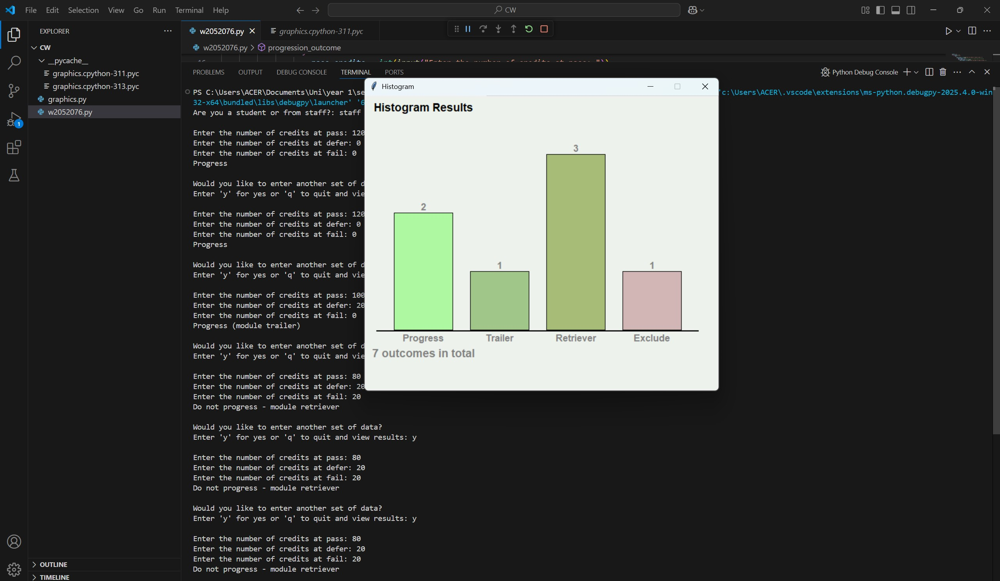

01
Mobile development / 2025
Axion↗
AXION / HEALTH, IN FOCUS


Engineering the logic.
Imagining the possibilities.
Great interfaces begin with thoughtful systems.
Pull this one
apart. See how it connects.
The outer shell. Where structure becomes an experience people can understand.
See it in Axion ↗A VISUAL METAPHOR FOR SOFTWARE LAYERS
From the first line of logic to the last detail of an interface.
Six
explorations in building things that work.



Give the algorithm a challenge. Build a wall, move the target, then watch breadth-first search discover the shortest route.
A live browser experiment inspired by the pathfinding in Snake Battle. Every move is calculated.
Inside the original Java project ↗Place obstacles. Move the target. Find a way through.
I’m Rivindu. I like turning complicated problems into experiences that feel clear, useful and a little unexpected.
I’m studying for a BEng (Hons) in Software Engineering from the University of Westminster, delivered at the Informatics Institute of Technology. My work moves between mobile interfaces, Java systems, algorithms and interactive 3D.
What connects it all is curiosity: understanding how things work, then finding a more thoughtful way to build them.
Download my CV ↓Responsive web interfaces and cross-platform mobile experiences, with an eye for clear structure and thoughtful interaction.
From object-oriented models to API services and pathfinding: working through the logic that makes an application useful.
Exploring how procedural geometry, spatial interaction, and visual feedback can make software more expressive.
Designing, building, and checking ideas with tools that keep the development process clear and collaborative.
Building a foundation.
Learning by making.
BEng (Hons), University of Westminster.
Delivered at
Informatics Institute of Technology (IIT).
Java reservation systems, an Angular and Spring Boot application, and frontend development for the Axion SDGP group project.
Procedural 3D navigation in Three.js. Autonomous snakes using breadth-first search.
Edexcel IAL: A grades in Mathematics, Physics and ICT. Previously Leeds International School, 2010–2020.
Completed.
An idea, a collaboration,
or a good conversation.
I’d love
to hear from you.